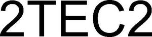

Trade Mark Journal No.2025/019 9 May 2025
WO0000001851334 (19,27)
Office of origin: Benelux Office for Intellectual Property (BOIP)
Date of International Registration:29 November 2024
Date of designation in the UK:
29 November 2024

International priority date claimed: 18 July 2024
(Benelux Office for Intellectual Property (BOIP))
(1507994)
- Class 19
- Floors, not of metal; parquet flooring; tile floorings, not of metal; non-metallic panels and plates for covering floors, walls and ceilings; wall tiles, not of metal; wall panels made of non-metallic materials; acoustic panels, not of metal; paving slabs, not of metal; parquet floors, planks for parquet floors, boards, tiles and rods for laying floors and for wall and ceiling coverings, not of metal; non-metallic partition walls for construction; building panels, not of metal; roofing, not of metal; stairs, treads and stringers, not made of metal; profiles, non-metallic, for cornices and stairs; non-metallic cladding for construction; non-metallic stair cladding for construction.
- Class 27
- Carpets, rugs, mats and matting, linoleum and other materials for covering existing floors; carpet tiles; backs of carpet tiles; carpet backing; floor rugs; floor coverings; carpet underlay; primary carpet backing; non-textile wallpaper; wallpaper; wall hangings, not of textile; wall coverings and ceiling coverings.
LE TISSAGE, société anonyme
Representative: Winger Trademarks BV, Charles de Kerchovelaan 17, B-9000 Gent, BELGIUM